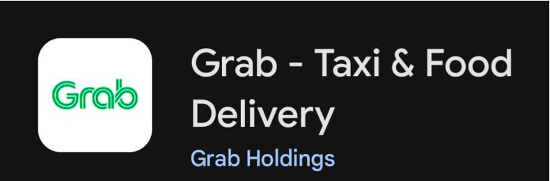
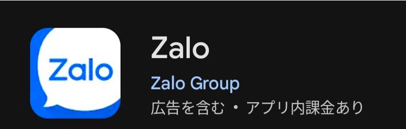

ベトナム研修に行った人に聞いた！
実際に持って行って良かったもの・持っていけば良かったものについて
立川陽菜
今回は、22年度、23年度にベトナム・ハイフォン研修に行った14名(回収率38％)からのアンケートをもとに、持ち物や日本でやっておくべきことなどについてまとめました。経験者からのコメントもたくさんいいただいたので、是非参考にしてみてください。
実際に持って行って良かったもの
1位 6票
ウェットティッシュ
「衛生面が不安なので、ウェットティッシュがあると便利。」
「100均に売っている10枚入りのコンパクトなものが持ち運びに便利だった。」
「レストランのテーブルに置いてあっても、使ったら追加でお金を請求される場合があるから、ご飯の前に手を綺麗にしたい人は持っていたほうがいい。」
2位 3票
日本の食べ物
「滞在期間が長かったので、体調を崩した時に食べられるものがあると安心だった。」
「日本のお菓子は現地の学生とコミュニケーションを取るのにも使えるので小分けのものが多いといいと思う。」
写真はお菓子だけですが、インスタントの味噌汁や干し梅などを持ってきている人もいました。キャラクターがデザインされているパッケージだと、話のネタにもなるのでおすすめです。
2位 3票
ウィンドブレーカー
「想像していたよりも寒くて、1着しか持ってきていない上着をほぼ毎日着ていた。」
「バイクタクシーに乗るときに雨が降っていたら、水をはじくウィンドブレーカーの方がいいです。」
2位 3票
ティッシュ
「トイレにトイレットペーパーがないことがあります。特に大学のトイレやカフェ、ごはん屋さんのトイレにはありませんでした。」
2位 3票
薬類
「氷でお腹の調子が良くなくなるから。」
「気候や気温がはっきりしないことが多く頭痛がおきやすい人は特に持って行った方が安心です。」
3位 2票
ハンガー
「部屋に備えつけてあるハンガーの数では足りなかったから。」
3位 2票
石鹼
「トイレに石鹸がないことがあったから。」
「紙石鹸やチューブタイプなど持ち運びできるタイプが便利。」
3位 2票
紙コップ
「コップは置いてあったものの衛生面が気になりました。」
「パーティーする時にも使いました。たくさんあると良いかも。」
その他
ハンギングポーチ
「朝夜の支度が楽。ホテルだけど家のように過ごせて快適だった。」
ひも
「わりと長めのひも。タオルや自分で洗った服を干すのに使った。トイレ・シャワーが部屋から丸見えだったが、タオルをかけたら目隠しにもなった。」
キャリーケース2つ
「荷物が多い人向け。出発前は失敗したかもと思ったが、無料受託荷物が「23kg以内×2個まで」ということが滞在中にわかって（要確認）、荷物が入らないという理由でお土産を諦めなくて済んだ。ダナンへ行く時に使ってもよかったかも。」
無料受託荷物については、ベトナム航空のサイトをご確認ください。
ベトナム航空サイト
手紙セット
「手紙はベトナムだとなかなか見つけられないし、ダイソーもベトナムにあるけど日本のほうが安いです。」
スリッパ
「スリッパは部屋の中で歩くのに紙のものだと少し違和感があったのと、お風呂だとサンダルが便利でした。」
「ベトナムドンを入れるのに使いました。ベトナムドンは紙幣のみなのでポーチで十分。」
折りたたみ傘
「霧のような雨が降っているときが多かったから。」
体温計
「体調が悪くなったときのために参加者の中で誰か1人でも持っていると安心したから。」
全員持っていく必要はないかもしれませんが、グループの中で1人でも持っていると安心です
ネックピロー
「移動が長いためネックピローがあれば寝違えることも少ないし、お尻にも敷けるので案外便利でした。」
写ルンです
「思い出作りのために写ルンですを持っていって、日本に帰ってきて現像すれば思い出に残りやすいのかなと思います。」
持っていけばよかったもの
洗濯ネット
「ホテルの人に全任せだったので、友達のと混ざらないようにするために必要かなと思います。」
リセッシュ
「服や部屋の消臭に使った。
「ホテルが独特の香り（好きな人もいるかもしれないが私は苦手）だったため。」
サバイバルナイフ
「買った果物を切るため。」
「瓶タイプのお酒を開けるのも出来ました。」
小さいシャンプー
「1ヶ月の間に、違うホテルに泊まった。ハイフォンにいるときは大きいのを使っていたが、違うホテルに泊まるときは小さいのを持っていくか、詰め替えるか、一回分の使い切りのやつを持っていくなどできたらよかった。」
「ホテルにシャンプーはありますが、品質に不安があったため、日本からのシャンプーなどのヘアケア商品を持っていった人が多かったです。」
ガイドブック（電子）
「ハノイやダナンに行く前に見られたらよかった。紙だと荷物になるので[KK2] 、電子版でも読めるものにすればよかった。」
日本のおかし（バラマキ用）
「学生さんにシェアしたかったから。特に抹茶味は人気！」
「きのこの山とたけのこの里のファミリーパックを持っていって、どちらが好きかという話で盛り上がりました。」
トリートメント
「長い期間適当なヘアケアをすると傷むので！」
体温計
「思っていたより寒いし、実際の気温はどうなるか分からないから」
物干しピンチ
「大きい衣類はホテルに洗濯をお願いしていたが、下着や靴下など手洗いできるものは自分たちで洗っていたので干せるものがあると便利。」
ドライヤー
「ホテルにドライヤーはあったが、小さくて不便だった。」
日本のアニメTシャツ
「日本のアニメが好きなベトナム人が多かったので、あれば会話のきっかけになると思います」
のど飴
「喉風邪をしてしまった時に友人にもらったのど飴のおかげで回復した節があるので、味はともかく龍角散信者になりました。」
「龍角散ダイレクトがおすすめです。」
変換プラグ
「スマホとイヤホンとモバイル充電器の充電のためだけだったのでAタイプのプラグ(日本と同じ)で間に合いましたが、Aタイプに対応していないホテルやコンセントもあると思うのでCタイプの変換プラグも持っていたら便利なのではと思いました。」
サプリメント
「栄養が偏ったり、睡眠不足になったりしがちなのでサプリメントを持っていくと良かったと感じた。」
モバイルバッテリー
「スマホの充電が足りなくなることが多かった。スマホが使えない状態で孤立すると死活問題なので、必須だと感じた。」
薬類
「現地でどんな症状が出るか分からないので、自分で使うためにも、他の人にあげるためにも、多すぎるくらい薬は持っていったほうがいいと思った。」
持ってこなくても良かったもの
- ハンガー
- トイレクリーナー
- ネックピロー
- 耳栓
- 自分で食べる用の日本食
- バスタオル
- ハンドタオル
- 変換プラグ
- 予備の靴
- 本
日本でやっておきましょう
Grabのインストール・クレジットカードの追加
タクシー配車アプリ。電話番号認証が必要なので、ベトナムに行ってからのインストールはできません…。クレジットカードまで追加しておくとベトナムドンで払う必要がないので楽です！
Zaloのインストール
ベトナムのLINEみたいなチャットアプリ。同じく認証が必要な場合があるので、日本で設定まで済ませると楽です。ベトナムの学生と連絡先を交換することがあるので、持っていると便利！
日本の課題は日本で済ませる
ベトナムで、日本の課題に追われるほど切ないことはありません…
ベトナムのSIMを購入
空港で買うこともできますが、勧誘がすごいのと、英語で説明されて混乱する可能性があります。事前にAmazonなどでSIMを購入したり、eSIMを購入したりしておくのもいいと思います。割高かもしれませんが。
ベトナムでいくら使った？
| 金額 | 人数 | 滞在期間 |
|---|---|---|
| ３～４万円 | ６人 | ２週間 |
| ５万円くらい | １人 | ２週間 |
| １０万円 | ２人 | ２週間参加、１ヶ月 |
ベトナムは基本的に現金です。空港に到着した際にレートがいいところで換金してしまうと楽だと思います。街中で両替するのは、場所を見つけるのが大変なのと、ぼったくられる可能性があるので危険です。
筆者は途中で現金が足りなくなり、ハイフォン大学の先生と一緒に貴金属買取店で両替しましたが、１万円札しか受け付けてもらえなかったのでびっくりしました。ATMでクレジットカードからキャッシングをした友人は、手数料が500円くらいかかったと言っていました。
空港の為替レートの見方
このような看板のある店が空港の外に出る直前にあります。見るのは日本の国旗の部分です。私達は日本円でベトナムドンを「買う」ので、「Buying」の数字に注目します（左側の緑の文字） 。この数字が大きければ大きいほどレートが良く、お得です。
（写真はタイの空港のものです。数字はベトナムとだいぶ異なりますが、イメージとしてご覧ください。）